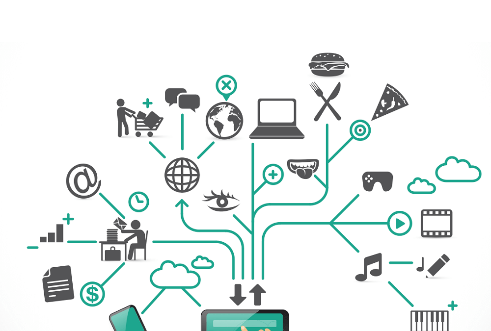

Internet das Coisas (em inglês: Internet of Things, IoT, sendo em português e espanhol IdC o acrónimo equivalente) é um conceito que se refere à interconexão digital de objetos cotidianos com a internet, conexão dos objetos mais do que das pessoas.
Em outras palavras, a internet das coisas nada mais é que uma rede de objetos físicos (veículos, prédios e outros dotados de tecnologia embarcada, sensores e conexão com a rede) capaz de reunir e de transmitir dados. É uma extensão da internet atual que possibilita que objetos do dia-a-dia, quaisquer que sejam mas que tenham capacidade computacional e de comunicação, se conectem à Internet.
A Internet das Coisas corresponde à fase atual da internet em que os objetos se relacionam com objetos humanos e animais os quais passam a ser objetos portadores de dispositivos computacionais capazes de conexão e comunicação (SANTAELLA et al. 2013, p.28)
A conexão com a rede mundial de computadores possibilita, em primeiro lugar, controlar remotamente os objetos e, em segundo lugar, que os próprios objetos sejam usados como provedores de serviços. Essas novas capacidades dos objetos comuns abrem caminho a inúmeras possibilidades, tanto no âmbito acadêmico quanto no industrial. Todavia, tais possibilidades acarretam riscos e implicam grandes desafios técnicos e sociais.
Se os objetos do cotidiano tivessem incorporadas etiquetas RFID ("etiquetas inteligentes"), poderiam ser identificados e controlados por outros equipamentos e não por seres humanos. Se, por exemplo, certos objetos entre outras coisas como livros, termostatos, refrigeradores, lâmpadas, remédios, autopeças, fossem equipados com dispositivos de identificação e conectados à Internet, não haveria a possibilidade de faltarem produtos como alguns remédios, pois saberíamos exatamente onde os encontrar e quantos estariam disponíveis. A ocasional falta deles passaria a ser coisa do passado. Saberíamos também, a qualquer momento, qual é a lâmpada que acende e qual é a que está fundida.
O conceito 'Internet das coisas' foi proposto em 1999, por Kevin Ashton, no Laboratório de Auto-ID do MIT, onde se realizavam pesquisas no campo da identificação por radiofrequência em rede (RFID) e tecnologias de sensores. Atualmente, a expressão 'Internet das coisas' designa a conexão avançada de dispositivos, de sistemas e de serviços. Ultrapassa o conceito tradicional M2M do máquina a máquina e abarca uma ampla variedade de protocolos, domínios e aplicações.
Referências
SANTAELLA, L.; GALA, A.; POLICARPO, C.; GAZONI, R. Desvelando a Internet das Coisas. Revista GEMInIS, v. 4, n. 2, p. 19-32, 15 dez. 2013.
Wikipédia. Internet das coisas. Disponível em: https://pt.wikipedia.org/wiki/Internet_das_coisas. Acesso em: 19 de Março de 2020.